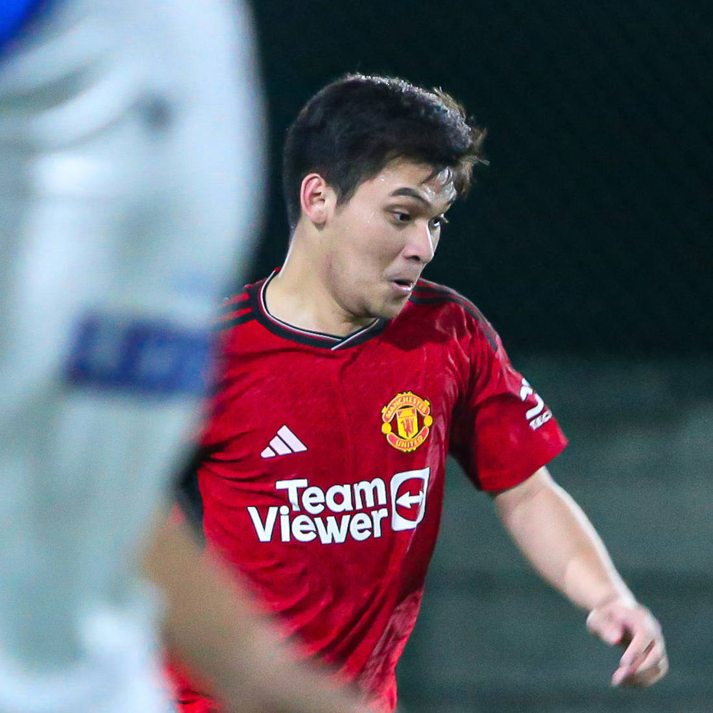

Muhammad Aldiansyah Zain

Summary
I am a hardworking and dedicated individual with experience in web developer.
Edcuation
- Bachelor of Informatics Engineering - University of Dian Nuswantoro (2017 - 2021)
Work Experience
Administrative Staff - University of Dian Nuswantoro
Okt 2021 - At the moment
Web Developer - Telkomsel
Jan 2019 - Feb 2019
Laboratory Assistant - University of Dian Nuswantoro
Sep 2017 - Sep 2018
Skills
- Web Development: HTML, CSS, JavaScript, etc: ⭐️⭐️⭐️
- Communication: Verbal and written communication skills: ⭐️⭐️⭐️⭐️
- Microsoft Office: ⭐️⭐️⭐️⭐️
- Teamwork: Ability to work collaboratively in a team setting: ⭐️⭐️⭐️⭐️⭐️
Awards and Certifications
- Sertifikat Kelas Belajar GIT untuk Pemula (July 2024)
- Sertifikat Kelas Panduan Awal Menjadi Fullstack Web Developer (July 2024)
Others